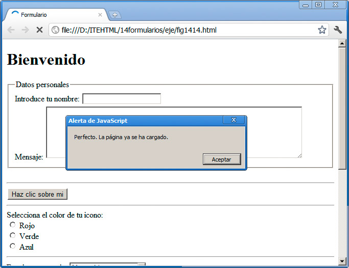
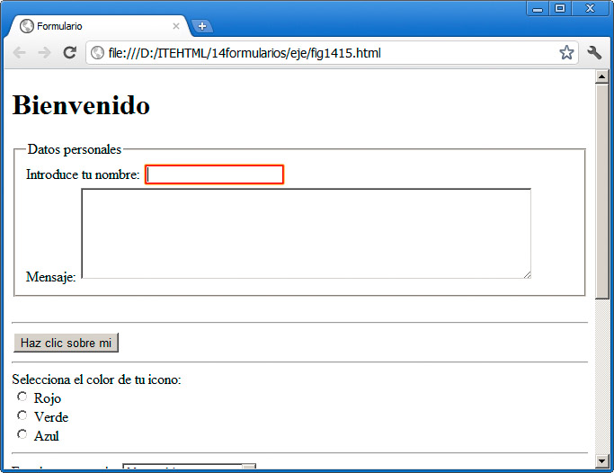
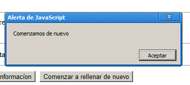

Con independencia del tratamiento que realicemos con un formulario, que como venimos diciendo requiere en ocasiones que se complemente con otras tecnologías diferentes a las que estamos aprendiendo, podemos profundizar en la interactividad de las páginas web gracias a los eventos.
Un evento es algo que sucede en el navegador, de tal manera que, cuando ocurren, podemos definir algún comportamiento concreto, una respuesta por parte de la página web, mediante nuestro medio o utilizando esas otras tecnologías del lado del servidor.
Veamos un ejemplo sencillo que nos ayudará a entender este concepto:
Carga y descarga de la página
Cada vez que el navegador termina de cargar una página, le remite al documento una indicación de que se ha producido un evento que se llama onload. De este modo, desde la página web podemos saber en qué preciso momento se ha terminado de cargar la página completamente y podemos realizar alguna acción. Para realizar estas acciones podemos, por ejemplo, utilizar el lenguaje JavaScript, con el que ya hemos realizado un par de prácticas.
Observa la línea siguiente:
<body onload="JavaScript:alert('Perfecto. La página ya se ha cargado.');">
alert es una función del lenguaje JavaScript que se utiliza para mostrar un mensaje en la ventana del navegador, como una ventana emergente. Se suele acompañar de un pequeño texto, que será el que se muestre. Ésta es una función muy utilizada, porque permite averiguar los mensajes que se están generando dentro de la página web.
Como se puede observar, indicamos que es una instrucción de JavaScript poniendo primero ese término seguido de un signo de dos puntos.
Al probar la página web y terminar de cargarse, obtendremos el siguiente resultado:

Nota
Todas las funciones de JavaScript (y de otros muchos lenguajes de programación) siguen una estructura parecida: primero se indica el nombre de la función y a continuación, entre paréntesis, los diferentes parámetros que la función necesita para funcionar. Además las líneas en JavaScript finalizan con un signo de punto y coma, lo que le indica a la parte encargada de interpretar las órdenes que ahí ha finalizado la instrucción que le estamos dando.
Además de onload tenemos otros controles que se lanzan antes de que se cargue la página (onbeforeload), cuando se abandona la página (onunload).
Más eventos de body
No se acaban ahí las opciones; tenemos eventos para controlar aspectos como el momento en que se cambia el tamaño de una ventana (onresize), el momento en que se imprime una página web (onprint) o el momento antes de comenzar la impresión (onbeforeprint) y otros muchos más.
La conclusión es que empleando JavaScript, Ajax o tecnologías del lado del servidor podemos responder perfectamente ante cualquier operación que se realice con la página web en general.
Enfoque y desenfoque
En el ámbito informático, en sistemas como una página web donde varios elementos se presentan ante el usuario, se emplea el concepto de foco para determinar qué elemento, de los disponibles en la pantalla, es el que tiene la atención en cada momento. Así, si por ejemplo pulsamos una tecla en el teclado, afectará al elemento que tenga el foco. Cuando pasamos a un segundo elemento, haciendo clic con el ratón, el primero deja de tener el foco y lo obtiene a su vez el segundo.
Contamos con dos eventos para realizar operaciones cuando un elemento obtiene el foco (onfocus) y para cuando lo pierde (onblur). Suelen resultar bastante útiles al trabajar con formularios.
Observemos el ejemplo de la figura. El estado inicial de los campos es similar en todo caso, pero cuando el usuario hace clic en el campo Nombre, éste se vuelve de color rojo. Cuando el usuario pasa a otro campo (cuando nombre pierde el foco), vuelve a su color habitual:

Para conseguirlo de nuevo, debemos recurrir a técnicas basadas en JavaScript. En esta ocasión hemos optado por incorporar el código necesario en la cabecera de la página, entre <head> y </head>.
<head>
[...]
<script language="JavaScript">
function enfocado(id_objeto) {
document.getElementById(id_objeto).style.border="2px solid red";
}
function desenfocado(id_objeto) {
document.getElementById(id_objeto).style.border="inherit";
}
</script>
</head>
Es un código muy sencillo que ya hemos empleado además en otra ocasión. Definimos dos funciones que recibirán el id de un elemento HTML y modificarán el borde en cada caso. En el primero pondrá un borde rojo de 2 píxeles y en el segundo regresará a su valor original.
Las estructuras de las funciones en JavaScript son siempre muy similares a éstas. Se indica el nombre de la función, los parámetros que va a utilizar y posteriormente, entre llaves, se indican las acciones a realizar. En nuestro ejemplo cada función tiene una única opción, pero normalmente tendrán muchas más.
Para que funcione, modificaremos el elemento HTML dejándolo así:
<fieldset>
<legend>Datos personales</legend>
Introduce tu nombre: <input name="nombre" id="nombre" type="text" onfocus="JavaScript:enfocado(this.id);" onblur="JavaScript:desenfocado (this.id);"> <br />
Mensaje: <textarea name="mensaje" cols="60" rows="6"></textarea> <br />
</fieldset>
Como se puede observar, sólo hemos cambiado la línea del nombre respecto a los ejemplos anteriores. Hemos añadido tres cosas:
- Un id denominado nombre.
- Un evento onfocus que ejecutará la función enfocado que hemos definido en la cabecera. this.id es el valor que le enviamos a la función y equivaldría a "nombre" en este ejemplo.
- Un evento onblur que ejecutará la otra función.
Cuando probemos la página todo funcionará correctamente. De hecho, añadiendo estas tres últimas modificaciones a cualquier campo del formulario, conseguiremos que tengan ese cambio de color. Las funciones se pueden reutilizar tantas veces como sea necesario.
Nota
Hay formas más sencillas y directas para conseguir este mismo resultado, pero resultan menos intuitivas para nuestro aprendizaje. Cuanto más profundicemos en el uso de JavaScript, más sencillo se irá volviendo su aplicación.
Los formularios cuentan con otros muchos eventos, como cuando alguien pulsa el botón de envío del formulario (onsubmit), cuando alguien hace clic en el botón de reiniciarlo (onreset), cuando se introduce información en un cuadro (oninput) o cuando un valor cambia (onchange).
Actividad 4
Probaremos a realizar una pequeña gestión de eventos, de tal modo que, cuando un usuario haga clic en el botón de limpieza del formulario, se le muestre un aviso con cualquier texto, como se recoge en la figura. Ya hemos visto todo lo necesario para conseguirlo. Como pista, la única parte que debemos deducir es dónde ubicaremos la gestión del evento, si en el botón de reset o en la etiqueta del formulario. Al ser un evento que afecta a todo el formulario, debe ser en la etiqueta de formulario, pero podemos probar en ambos sitios para asegurarnos.

El teclado
Contamos con tres posibles eventos cuando trabajamos con el teclado.
- onkeydown: sucede cuando una tecla está presionada.
- onkeyup: cuando se libera una tecla.
- onkeypress: cuando se pulsa una tecla.
Con estos eventos podemos desplazarnos a zonas de la página, desplegar un menú determinado e incluso realizar pequeños juegos que respondan a la pulsación de las teclas.
El siguiente código realiza un sencillo uso de onkeypress, mostrando en una parte de la página la tecla que se pulsa:
<!DOCTYPE html>
<html>
<head>
<meta content="text/html; charset=UTF-8" http-equiv="Content-Type">
<title>Formulario</title>
<script language="JavaScript">function mostrar_tecla(e) {
if (e.keyCode) keycode=e.keyCode;
else keycode=e.which;
document.getElementById('zonadeteclas').innerHTML = document.getElementById('zonadeteclas').innerHTML + String.fromCharCode(keycode);
}
</script>
</head><body onkeypress="mostrar_tecla(event);">
Prueba de teclas: <span id="zonadeteclas"></span>
</body>
</html>
Cada vez que se pulse una tecla, se mostrará en la zona en la que hemos ubicado la etiqueta <span>. El código JavaScript utiliza una sencilla fórmula para averiguar qué tecla se ha pulsado. Estas tres líneas nos mostrarían la tecla en una ventana emergente.
if (e.keyCode) keycode=e.keyCode;
else keycode=e.which;
alert(String.fromCharCode(keycode));
En su lugar la mostramos en la pantalla mediante la propiedad innerHTML, que nos permite incorporar en tiempo real un texto, etiqueta o cualquier otro elemento a una página web.
Nota
Esto se está volviendo complicado, lo sabemos. Podemos tomarlo como pequeñas fórmulas que se pueden aplicar en diferentes condiciones o simplemente no darle mucha importancia. JavaScript es un buen complemento, pero no es el centro de la creación de páginas web.
Controlando el ratón
El ratón es el elemento lanzador de eventos por antonomasia. Cada vez que lo desplazamos o que pasamos por encima de algún lugar, estamos generando eventos que pueden ser manipulados mediante nuestra página web.
Aquí van algunos de esos eventos:
- onclick, ondblclick, onmousewheel: generan un evento cuando se hace clic, doble clic o se usa la rueda del ratón.
- ondrag, ondragend, ondragenter, ondragleave, ondragover, ondragstart, ondrop: controlan todas las posibilidades que se generan al arrastrar y soltar un elemento en la página web.
- onmousedown, onmousemove, onmouseout, onmouseover, onmouseup: controlan el movimiento del ratón cuando no está presionado el botón, al pasar sobre un elemento, al salir de él, etc.
- onscroll: cuando hay un desplazamiento vertical.
Más adelante probaremos alguno de estos eventos y otros ya los hemos probado. Aquí es importante fijarse en dónde ponemos el evento. Por ejemplo, un evento onmousemove dentro de una imagen nos asegurará que se ejecute la acción prevista cada vez que el ratón se desplace, pero sólo dentro de esa imagen. Si por el contrario lo indicamos en la etiqueta <body>, el evento se generará cada vez que el ratón se desplace por cualquier lugar de la página.
Actividad 5
Probaremos a realizar un evento que muestre un aviso cada vez que se hace doble clic sobre una imagen. Observaremos la diferencia al colocar ese mismo evento en la etiqueta <body> o en algún <div> que ocupe parte de la pantalla.
Eventos multimedia
Con la llegada de las etiquetas <video> y <audio> encontramos también una serie de eventos destinados a gestionar lo que sucede al reproducir elementos multimedia. Encontraremos eventos que se lanzan al reproducir un recurso, al pausarlo, al finalizar, si no se puede reproducir, al cargar datos, al modificarse su volumen y otros muchos más, cuyo análisis es largo y su implementación aún es irregular. De momento nos bastará saber que están ahí.
Pregunta Verdadero-Falso
Las siguientes afirmaciones, ¿son verdaderas o falsas?
Verdadero Falso
Verdadero Falso
Verdadero Falso
Verdadero Falso